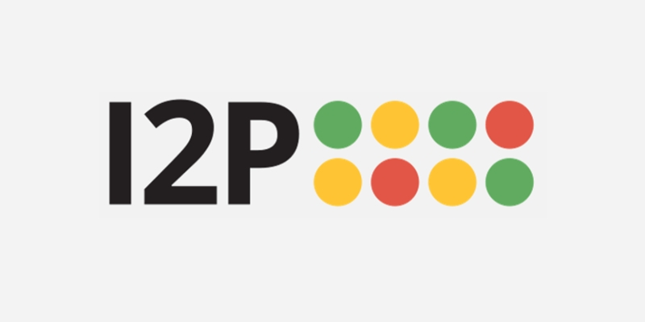

Mi az a dark web?
A dark web az internetnek az a része, amit a keresőmotork nem indexelnek, és csak speciális szoftverekkel lehet elérni. Nem egy külön hely, hanem több, egymástól független hálózat, amelyekhez külön program kell.
Sokan a bűnözőkkel kötik össze, pedig nem csak nekik való. Újságírók, aktivisták és olyan emberek is használják, akik nem akarják, hogy nyomon kövessék őket. Aki cenzúra alatt él, sokszor csak így éri el a szabad információt.
Az anonimitáshoz többféle eszköz létezik: van böngésző, van önálló hálózat és van teljes operációs rendszer. Alább mindegyiket megtalálod, röviden.
Ismerd meg a lehetőségeket

Tor
A legismertebb eszköz. Letöltöd, megnyitod, és már a dark weben vagy.

I2P
Saját, zárt hálózat, amit rejtett szolgáltatásokra építettek.

Whonix
Két virtuális gép, ami minden forgalmat a Toron küld át.

Tails
Pendrive-ról indul, és leállítás után nem hagy nyomot.

Freenet
Hálózat, ahol a tartalom szerver nélkül is megmarad.